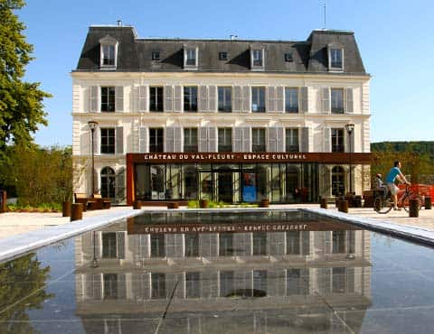
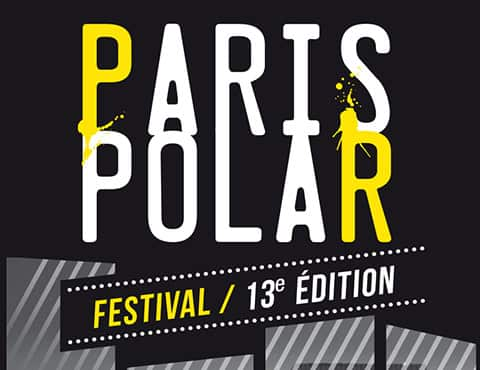
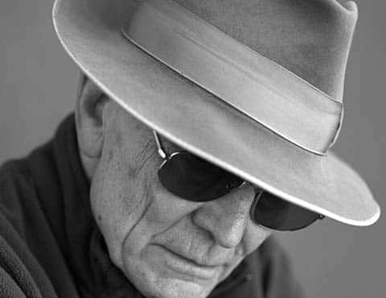
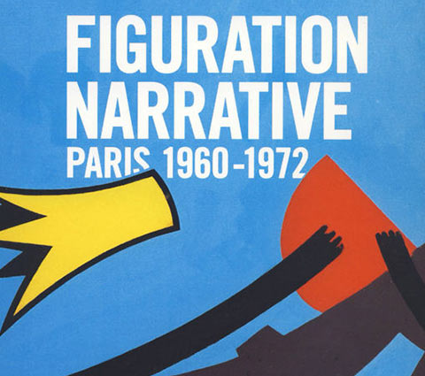

Tragédies Monory
Château du Val Fleury, Gif-sur-Yvette
Du 12 janvier au 21 février 2016
Plus d'infos

Château du Val Fleury, Gif-sur-Yvette
Du 12 janvier au 21 février 2016
Plus d'infos
Galerie de la mairie du 13e, Paris
Du 18 novembre au 6 décembre 2016
Plus d'infosJacques Monory naît à Paris d’une mère couturière et d’un père argentin, chauffeur pour dames ou pour révolutionnaires des Brigades internationales, c’est selon. Allergique à la scolarité, il réussit pourtant en 1939 le concours d’entrée de l’Ecole des arts appliqués à l’Industrie dont il sera diplômé et où il étudie la peinture, le graphisme, la décoration et la fresque (1939-1944).
Découvrir
Les peintures de Monory constituent des histoires, des « scénarios thrillerés », et que son ami, le philosophe Jean-François Lyotard a qualifié du titre baudelairien de « Peintre de la vie moderne ».
Découvrir
Dans les années 60 et 70 nait un mouvement majeur de la scène artistique. Inspirés autant par la photo, le cinéma, la publicité, la BD que par la peinture classique, les artistes de la Figuration narrative détournent l'image pour servir leurs implications politiques et suggérer d'autres narrations.
Découvrir